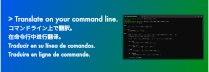

$ cargo install dptran

$ dptran
dptran provides a command-line tool to translate text using the DeepL API.-f option and the destination language with the -t option.
quit.-t option.
-i option.dptran can be used as a library in your Rust project.dptran includes the binary crate's dependent crates (such as clap, serde_json and confy) by the default features.--no-default-features argument.
| Version | Release date | Install |
|---|---|---|
| ver.2.0.0 | March 3, 2024 | $ cargo install dptran@=2.0.0 |
| ver.1.0.2 | December 1, 2023 | $ cargo install dptran@=1.0.2 |
| ver.1.0.1 | December 1, 2023 | $ cargo install dptran@=1.0.1 |
| ver.1.0.0 | December 1, 2023 | $ cargo install dptran@=1.0.0 |